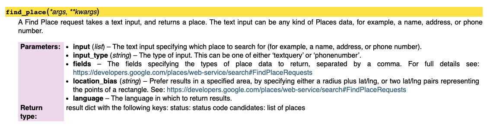
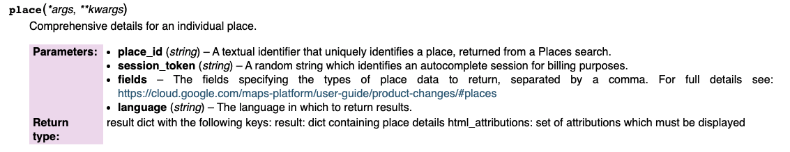

How to Figure Out a New API¶
In this notebook, we will walk through how you might figure out a new and unfamiliar API.
Let’s say you want to find data about the reviews that people write about places on Google Maps.
First, You Google Around¶
To find that data, you might google “Google Maps API” and “Google Maps API wrapper.”
The first search result for “Google Maps API wrapper” is a web page linking to “client libraries” for the API — essentially, API wrappers written by the Google Maps team. Sweet!
You click the link for the Python library, since Python is the language that we’re working with in this class.
Then, Most Likely, You Create an API Key¶
Reading the documentation is SUPER important for figuring out an API or API wrapper. It’s like a mini-textbook for how to use the code.
In the GitHub repository for the Python wrapper, the documentation explains that you need an API key to use the wrapper:
Each Google Maps Web Service request requires an API key or client ID. API keys are generated in the ‘Credentials’ page of the ‘APIs & Services’ tab of Google Cloud console.
The process for creating an API key with any Google app — Google Maps, YouTube, Gmail, Google Sheets, etc. — is fairly complicated and requires a credit card. But the steps are explained in detail on Google’s website.
First, you need to create a “project” on the Google Cloud Console and set up billing
Then you need to enable the specific APIs that you want to use
Then you need to make an API key
Once you have an API key, you want to save it in a safe place on your computer. Be sure not to share it openly on the internet.
For these reasons, it is good practice to import your API key from another file. That way, if you share your notebook on the internet, nobody can see your API key directly.
For example, you can save your API key in the file my_api_key.py, which is also in this directory, then import this file as a Python module. Then you can reference the saved variable api_key from that module.
import my_api_key
Test it out by running this cell
api_key
You can also manually copy and paste your API key into a notebook, but again you should be sure to delete this cell and not share the key on the internet.
#api_key = "YOUR API KEY HERE"
Then You Read the Documentation¶
and re-read the documentation and re-re-read the documentation…¶
Google Maps Places documentation: https://developers.google.com/maps/documentation/places/web-service/search
Google Maps API wrapper documentation: https://googlemaps.github.io/google-maps-services-python/docs/index.html#


Then You Test It Out¶
Install Google Maps API wrapper
! pip install -U googlemaps
Import libraries
import googlemaps
import pandas as pd
pd.options.display.max_rows = 50
pd.options.display.max_columns = 50
pd.options.display.max_colwidth = 500
Set up Google Maps wrapper with API key
gmaps = googlemaps.Client(key=api_key)
Find the place ID for Beebe Lake
gmaps.find_place('Beebe Lake', input_type='textquery')
{'candidates': [{'place_id': 'ChIJqfTWVB6C0IkRSZm2PCd1JHE'}], 'status': 'OK'}
Find place details for Beebe Lake
gmaps.place('ChIJqfTWVB6C0IkRSZm2PCd1JHE')
{'html_attributions': [],
'result': {'address_components': [{'long_name': 'Beebe Lake',
'short_name': 'Beebe Lake',
'types': ['natural_feature', 'establishment']},
{'long_name': 'Tompkins County',
'short_name': 'Tompkins County',
'types': ['administrative_area_level_2', 'political']},
{'long_name': 'New York',
'short_name': 'NY',
'types': ['administrative_area_level_1', 'political']},
{'long_name': 'United States',
'short_name': 'US',
'types': ['country', 'political']},
{'long_name': '14850', 'short_name': '14850', 'types': ['postal_code']}],
'adr_address': 'Beebe Lake, <span class="region">New York</span> <span class="postal-code">14850</span>, <span class="country-name">USA</span>',
'formatted_address': 'Beebe Lake, New York 14850, USA',
'geometry': {'location': {'lat': 42.4510099, 'lng': -76.4761904},
'viewport': {'northeast': {'lat': 42.45258032994754,
'lng': -76.4730453317786},
'southwest': {'lat': 42.44988236936455, 'lng': -76.47999756180495}}},
'icon': 'https://maps.gstatic.com/mapfiles/place_api/icons/v1/png_71/geocode-71.png',
'name': 'Beebe Lake',
'photos': [{'height': 3024,
'html_attributions': ['<a href="https://maps.google.com/maps/contrib/109578824600894016964">Charlie Chung</a>'],
'photo_reference': 'ATtYBwIB5W1OsqcJwpMqOm2bPRIpS6baR5Xm50t6jT_Z7z-sUWrtOr22E-IDUPCCeIErsQh3B-q8YfERjkXLrvh-6fnRgvypcRGXW98Nr-LC3ww9YG45PTW8sWk9NKt6mfJF8ABTZnlMlbENYy9rWNDZKW4C3vkUcrbus21Q1KoKKCWTqIgX',
'width': 4032},
{'height': 3024,
'html_attributions': ['<a href="https://maps.google.com/maps/contrib/113388717724158109337">Daisy Y</a>'],
'photo_reference': 'ATtYBwKSHgulXYjhQuPGMnTjxzPb0yr0ekbqwO7ZrcQysCfqEiT-2Yti0wb6Iy2yEqgsAhIej01Rgkjf27zp2EYt2aS9SnAoEEi5QXjvUFiY0ivHMdos5HQWiUKcEDNumaD1rR0Z38UdtYJnqox_rXEbGnjsL7_IdoYBLi2GcpB273OtP7Mb',
'width': 4032},
{'height': 3120,
'html_attributions': ['<a href="https://maps.google.com/maps/contrib/105517093223006174537">nazlı konya</a>'],
'photo_reference': 'ATtYBwJX-pXA74mUrp2d4u-91IVUfunM-JCv_boDYd_CB3CNuchohnQ5SRy4TXqD4txJrrgREKJn6OW2Q8QXG102fwepDhLOuUohpUxnVDLh1aWtYmI_qFYMGQYckupmNL2DJrETfng01oH1YZcxrett631atFb9tX2wIEB26t7vdCs3fgw',
'width': 4160},
{'height': 1456,
'html_attributions': ['<a href="https://maps.google.com/maps/contrib/101046882135806425785">Ira Gon</a>'],
'photo_reference': 'ATtYBwLn0L04UvYIKJYDek14gPN2XY_9yMRlai2Zl6wZ-ODb6WNTcVkwUECQyCxZJCpURp0bpfJuw_HYp8srFhWSNmid_8TzFUEsvZVVErzOVyTlO4wn7gIRzCNE-2zCqGVgeK0e3o3IwIU9KseVJUoApdiwI6EPWWpQjTnlVw9PwOxxcsPO',
'width': 2592},
{'height': 3024,
'html_attributions': ['<a href="https://maps.google.com/maps/contrib/108640463498565010654">Regina Martinez</a>'],
'photo_reference': 'ATtYBwLWdatfq02gYDgXV0KzUIVSF37nvpxE7i65LvxKCNeAI0diG43CvimeXWApWGVQIbfaJ6cYByvU6nCUHk6NH-NPBgf2u6NnZIaeuMcRwn-PJkxLINtpJhBjKS1m6NEKzZrELHh3jiISZXOhOZ4TwdlEX1Vqjr3IuaF6t7UnZXyw5c1U',
'width': 4032},
{'height': 1872,
'html_attributions': ['<a href="https://maps.google.com/maps/contrib/110668897095058225687">Sandeep Kumar</a>'],
'photo_reference': 'ATtYBwIjyB6kwt_YwQn_HchqUkTBm9yoxTGLtXfVWHLOlcUPYpyLi-EVaT6CCgJWDAjVU7rSgwYPC_zdQCc9RxZw_sck5MbWUnyfSJAeMTC9FLS8MIacNx6rjm4yD4leiXbPh0-heEA2dt9wyNjpNQ7GJ_OhTx_xXuqpNPljMv61MM0CQfzT',
'width': 3328},
{'height': 4032,
'html_attributions': ['<a href="https://maps.google.com/maps/contrib/100533419529512773822">Ed cernyar</a>'],
'photo_reference': 'ATtYBwJVIlwxP9QxykQ5_xQZtOezuKFw-qbr1tog9d9ObyZle4XFPLZjNektNY1td5Yog7Z8SzufA-xVpXREEIoEnHFv38BLEIvOy5U-qsIRl_G5WF9bHU1VCWe4E0hr1HDzmrxPfBAoQc9lG4Z6HQIv97N0VmHbzCLkhCAMMMnWBA-tb4bv',
'width': 3024},
{'height': 3024,
'html_attributions': ['<a href="https://maps.google.com/maps/contrib/113388717724158109337">Daisy Y</a>'],
'photo_reference': 'ATtYBwKJ1dth2cS876W1QTKreya3hPg1QXDT3NKmoWE7NVWX8ixDjHd7XTjbSuhX11TwU67K-HWtFq8kdBg4HLE3GymRZF-Nsct7sy0eNpf_E6BEuagbppdhpROhDR5RGcagIAoLAocUE1cQ4cDPC4Is83WIMOg14jbJLhcav-wxRuMPcjNP',
'width': 4032},
{'height': 1872,
'html_attributions': ['<a href="https://maps.google.com/maps/contrib/110668897095058225687">Sandeep Kumar</a>'],
'photo_reference': 'ATtYBwLlRicNeeYpyY5K0ar65CtfGv6swqn0NeMNwa-N3Pcdciyqr2_4XDJRY5Y7oY8e3pKWHkfKElcga5Gink7208Py4XFI4SkLDq1eDazuVE87PQrmxN4JZ8_B1NB168Ju_KbDJvRT8cvPKRfJCcdKWRT_tXjJo_fZoPsWWf3YIFPEX_2t',
'width': 3328},
{'height': 3024,
'html_attributions': ['<a href="https://maps.google.com/maps/contrib/109670435802249590581">Teresa Tyrrell</a>'],
'photo_reference': 'ATtYBwLqtEFoNHRW5VVWNYt7prG-AGOCIaJYUSNMZAloy6TrwhsYwX--KzpIOihDJIeV70Ts50xdv9aDK-krA89Qii_-0pWZ6iumbwsRnIzn8K3u4ri2XTxIBd6s-WSi07RinwbFTfoHgtEe8NhGU_Ff24LNg8IC949O2uYQaPYIetjUzZTJ',
'width': 4032}],
'place_id': 'ChIJqfTWVB6C0IkRSZm2PCd1JHE',
'rating': 4.8,
'reference': 'ChIJqfTWVB6C0IkRSZm2PCd1JHE',
'reviews': [{'author_name': 'melissa stone',
'author_url': 'https://www.google.com/maps/contrib/104857888078479343452/reviews',
'language': 'en',
'profile_photo_url': 'https://lh3.googleusercontent.com/a-/AOh14GjzHObpe9adoJmL0A06bBo_9GmfaY3fo0gpS9Ov3w=s128-c0x00000000-cc-rp-mo-ba4',
'rating': 4,
'relative_time_description': '6 months ago',
'text': 'Long drive but worth it',
'time': 1602703216},
{'author_name': 'Daisy Y',
'author_url': 'https://www.google.com/maps/contrib/113388717724158109337/reviews',
'language': 'en',
'profile_photo_url': 'https://lh3.googleusercontent.com/a/AATXAJwDtJHu-A-tu-bxdFTEV1kVLap5EIH03Rzi42PQ=s128-c0x00000000-cc-rp-mo',
'rating': 5,
'relative_time_description': '7 months ago',
'text': 'its a quick trail and view is pretty on two ends of the trail',
'time': 1599430674},
{'author_name': 'FunkyMonk44',
'author_url': 'https://www.google.com/maps/contrib/113466325228139947132/reviews',
'language': 'en',
'profile_photo_url': 'https://lh3.googleusercontent.com/a/AATXAJy7rlcGvL2x7bdmsQTWOUcL0H3DahTIhPhLZQLY=s128-c0x00000000-cc-rp-mo-ba5',
'rating': 5,
'relative_time_description': 'a year ago',
'text': 'Great place to see the natural beauty of the surrounding area. Every nature area is unique in some way or another and this one does not disappoint. There is a bridge that you can take to capture even more views. Very relaxing and scenic setting for anyone looking for a peaceful adventure.',
'time': 1578625230},
{'author_name': 'Mariena Silvestry Ramos',
'author_url': 'https://www.google.com/maps/contrib/107999355375407869191/reviews',
'language': 'en',
'profile_photo_url': 'https://lh3.googleusercontent.com/a-/AOh14Gh1RnK-HbUwpyOtmFIgU3tQt9zDIeZoVua9ydSfHQ=s128-c0x00000000-cc-rp-mo-ba5',
'rating': 5,
'relative_time_description': 'a year ago',
'text': "Beautiful lake and hike. Easy to access from the Cornell campus. It looks absolutely breathtaking in the fall. There's a stone bridge with gorgeous views of the lake. Leads to Triphammer Falls. There's a bridge on campus (closed during the winter, I believe) to cross the falls. There are kayaks to rent too. Worth exploring for sure.",
'time': 1571456379},
{'author_name': 'Don Brovero',
'author_url': 'https://www.google.com/maps/contrib/111391850469954642590/reviews',
'language': 'en',
'profile_photo_url': 'https://lh3.googleusercontent.com/a-/AOh14GgnJrQz7VU7VGCp8XqpUQKnOBp2RNAh9NyeQtmddA=s128-c0x00000000-cc-rp-mo-ba5',
'rating': 4,
'relative_time_description': '11 months ago',
'text': 'A nice little hike around this lake. A lot of history, some cool natural water falls and also a neat damn. The hike is roughly 60 minutes and there is a lot to see and it is located right on the Cornell campus.',
'time': 1591043967}],
'types': ['natural_feature', 'establishment'],
'url': 'https://maps.google.com/?q=Beebe+Lake&ftid=0x89d0821e54d6f4a9:0x712475273cb69949',
'user_ratings_total': 8,
'utc_offset': -240},
'status': 'OK'}
Read the JSON data into a Pandas DataFrame
place = gmaps.place('ChIJqfTWVB6C0IkRSZm2PCd1JHE')
df = pd.json_normalize(place)
df
| html_attributions | status | result.address_components | result.adr_address | result.formatted_address | result.geometry.location.lat | result.geometry.location.lng | result.geometry.viewport.northeast.lat | result.geometry.viewport.northeast.lng | result.geometry.viewport.southwest.lat | result.geometry.viewport.southwest.lng | result.icon | result.name | result.photos | result.place_id | result.rating | result.reference | result.reviews | result.types | result.url | result.user_ratings_total | result.utc_offset | |
|---|---|---|---|---|---|---|---|---|---|---|---|---|---|---|---|---|---|---|---|---|---|---|
| 0 | [] | OK | [{'long_name': 'Beebe Lake', 'short_name': 'Beebe Lake', 'types': ['natural_feature', 'establishment']}, {'long_name': 'Tompkins County', 'short_name': 'Tompkins County', 'types': ['administrative_area_level_2', 'political']}, {'long_name': 'New York', 'short_name': 'NY', 'types': ['administrative_area_level_1', 'political']}, {'long_name': 'United States', 'short_name': 'US', 'types': ['country', 'political']}, {'long_name': '14850', 'short_name': '14850', 'types': ['postal_code']}] | Beebe Lake, <span class="region">New York</span> <span class="postal-code">14850</span>, <span class="country-name">USA</span> | Beebe Lake, New York 14850, USA | 42.45101 | -76.47619 | 42.45258 | -76.473045 | 42.449882 | -76.479998 | https://maps.gstatic.com/mapfiles/place_api/icons/v1/png_71/geocode-71.png | Beebe Lake | [{'height': 3024, 'html_attributions': ['<a href="https://maps.google.com/maps/contrib/109578824600894016964">Charlie Chung</a>'], 'photo_reference': 'ATtYBwIE78loUldyoKNmqiaMGEBOKc4jWuUI5VevaTBCl64iBXqNzHS83HLGxyWQYOGDeSXmFO6Negq2ARwByZzKE2h8yk623nVRLmf0bLQFBtNbIUCaySIYKbxEk9vThudMc8WglUXKCD-jQKTFa1V2TtnHQDcub9UjNyDxHOIdB1lx8BvL', 'width': 4032}, {'height': 3024, 'html_attributions': ['<a href="https://maps.google.com/maps/contrib/113388717724158109337">Daisy Y</a>'], 'photo_reference': 'AT... | ChIJqfTWVB6C0IkRSZm2PCd1JHE | 4.8 | ChIJqfTWVB6C0IkRSZm2PCd1JHE | [{'author_name': 'melissa stone', 'author_url': 'https://www.google.com/maps/contrib/104857888078479343452/reviews', 'language': 'en', 'profile_photo_url': 'https://lh3.googleusercontent.com/a-/AOh14GjzHObpe9adoJmL0A06bBo_9GmfaY3fo0gpS9Ov3w=s128-c0x00000000-cc-rp-mo-ba4', 'rating': 4, 'relative_time_description': '6 months ago', 'text': 'Long drive but worth it', 'time': 1602703216}, {'author_name': 'Daisy Y', 'author_url': 'https://www.google.com/maps/contrib/113388717724158109337/reviews',... | [natural_feature, establishment] | https://maps.google.com/?q=Beebe+Lake&ftid=0x89d0821e54d6f4a9:0x712475273cb69949 | 8 | -240 |
Check out the columns
df.columns
Index(['html_attributions', 'status', 'result.address_components',
'result.adr_address', 'result.formatted_address',
'result.geometry.location.lat', 'result.geometry.location.lng',
'result.geometry.viewport.northeast.lat',
'result.geometry.viewport.northeast.lng',
'result.geometry.viewport.southwest.lat',
'result.geometry.viewport.southwest.lng', 'result.icon', 'result.name',
'result.photos', 'result.place_id', 'result.rating', 'result.reference',
'result.reviews', 'result.types', 'result.url',
'result.user_ratings_total', 'result.utc_offset'],
dtype='object')
Just examine the reviews, average rating, and total user ratings
df[['result.reviews', 'result.rating', 'result.user_ratings_total']]
| result.reviews | result.rating | result.user_ratings_total | |
|---|---|---|---|
| 0 | [{'author_name': 'melissa stone', 'author_url': 'https://www.google.com/maps/contrib/104857888078479343452/reviews', 'language': 'en', 'profile_photo_url': 'https://lh3.googleusercontent.com/a-/AOh14GjzHObpe9adoJmL0A06bBo_9GmfaY3fo0gpS9Ov3w=s128-c0x00000000-cc-rp-mo-ba4', 'rating': 4, 'relative_time_description': '6 months ago', 'text': 'Long drive but worth it', 'time': 1602703216}, {'author_name': 'Daisy Y', 'author_url': 'https://www.google.com/maps/contrib/113388717724158109337/reviews',... | 4.8 | 8 |
Get Reviews¶
Based on the JSON, we can see that the review data is nested here:
place['result']['reviews']
{'html_attributions': [],
'result': {'address_components': [{'long_name': 'Beebe Lake',
'short_name': 'Beebe Lake',
'types': ['natural_feature', 'establishment']},
{'long_name': 'Tompkins County',
'short_name': 'Tompkins County',
'types': ['administrative_area_level_2', 'political']},
{'long_name': 'New York',
'short_name': 'NY',
'types': ['administrative_area_level_1', 'political']},
{'long_name': 'United States',
'short_name': 'US',
'types': ['country', 'political']},
{'long_name': '14850', 'short_name': '14850', 'types': ['postal_code']}],
'adr_address': 'Beebe Lake, <span class="region">New York</span> <span class="postal-code">14850</span>, <span class="country-name">USA</span>',
'formatted_address': 'Beebe Lake, New York 14850, USA',
'geometry': {'location': {'lat': 42.4510099, 'lng': -76.4761904},
'viewport': {'northeast': {'lat': 42.45258032994754,
'lng': -76.4730453317786},
'southwest': {'lat': 42.44988236936455, 'lng': -76.47999756180495}}},
'icon': 'https://maps.gstatic.com/mapfiles/place_api/icons/v1/png_71/geocode-71.png',
'name': 'Beebe Lake',
'photos': [{'height': 3024,
'html_attributions': ['<a href="https://maps.google.com/maps/contrib/109578824600894016964">Charlie Chung</a>'],
'photo_reference': 'ATtYBwIE78loUldyoKNmqiaMGEBOKc4jWuUI5VevaTBCl64iBXqNzHS83HLGxyWQYOGDeSXmFO6Negq2ARwByZzKE2h8yk623nVRLmf0bLQFBtNbIUCaySIYKbxEk9vThudMc8WglUXKCD-jQKTFa1V2TtnHQDcub9UjNyDxHOIdB1lx8BvL',
'width': 4032},
{'height': 3024,
'html_attributions': ['<a href="https://maps.google.com/maps/contrib/113388717724158109337">Daisy Y</a>'],
'photo_reference': 'ATtYBwLEAqGobRv_8oxmTCVArYiQgNpcSDMR9KzlJVjwUhRm8PcHHqMEZx_8SAyNJRS1sGrfVdOu6UbyaYLJiywfrrCve3I7YkyrwvDu0XGApTFMYLuiHRnaM90z16pFJ4CubsRMiOwgNR9tcP9ukxMrCy_xmutrjOMajiXAv1VgDfVrMT10',
'width': 4032},
{'height': 3120,
'html_attributions': ['<a href="https://maps.google.com/maps/contrib/105517093223006174537">nazlı konya</a>'],
'photo_reference': 'ATtYBwJoBgKRlkUDLltJEVPYiz32NKJf5AtYNDeTZLKcYgL8j1CeXe0BGmfXu6cuWoIfV553WU0aH-JW6jRBRx1WqpbaOIDkMYvtzXCfEwKbfbFiMFiQP_5lSNLA9chIkXy4aWjCZ_bhgeySi-TTM1OvdBun36MN7KT45-oY_2lFfeku7x0',
'width': 4160},
{'height': 1456,
'html_attributions': ['<a href="https://maps.google.com/maps/contrib/101046882135806425785">Ira Gon</a>'],
'photo_reference': 'ATtYBwJlfFJR3x-saK8hZCI4PZMsXM5lGck6I_ImJNyRPQrh9-33yeo958w2TV0SooKfwAGhirKOOj9KJXBhYyKNNgOAKSG3T3oFQLxT2iJQ_LWgBQD5Z4cxakNDS7Rr0L8Q5Si-a9FZ3RVRggO939OoY-yy1pXCrJe-QGoId_AXkmZyH6Gx',
'width': 2592},
{'height': 3024,
'html_attributions': ['<a href="https://maps.google.com/maps/contrib/108640463498565010654">Regina Martinez</a>'],
'photo_reference': 'ATtYBwL4bPROdZtdkDPJ89CnvhEDHsPLt6Ico-2K9qiirDm7SeozSTmymAwljOZaqPW_y5669Hb7l9am8TnUUfIeIki3DT316-AUAEhyYpgeuJJn74pqdfGETzJLW6TuWaQ3AzY0zim8meGeTbVanSlwKiagf3r3rrkE-H4qk5OI56ZGad9y',
'width': 4032},
{'height': 1872,
'html_attributions': ['<a href="https://maps.google.com/maps/contrib/110668897095058225687">Sandeep Kumar</a>'],
'photo_reference': 'ATtYBwIGCfUE2YeM3MFYopq6dSYMiLPZEUGDc1E0KTvr_OxSb20X0WGCZSg_0jlDBWJejXwx9PNcN2fDC0v73LwBOtURtxB9Wab2gD-cJ8PIWp4fYaHcWYtkLmnfAVWPEwX_rsJxX6f0m1yw6h3I9cjc1kq2CfhMhwEVWvOgcfFjTx4qXSh8',
'width': 3328},
{'height': 4032,
'html_attributions': ['<a href="https://maps.google.com/maps/contrib/100533419529512773822">Ed cernyar</a>'],
'photo_reference': 'ATtYBwI8_Momm1Yi4XX79ao36O7isjDVgRFuvV-SPK_bY8Ntyxj8xMv4RmrTqNJ0M0Vh2iT9leGqD_GnYcnT_yeMinoszx5SHtheX1pokfuxsX-kCfaZbZmowVCzhqjII0dmc-QvSCtNWkkv4faNouJfDkRUQXVYdS91kcyVmB2sQGOrgzxz',
'width': 3024},
{'height': 3024,
'html_attributions': ['<a href="https://maps.google.com/maps/contrib/113388717724158109337">Daisy Y</a>'],
'photo_reference': 'ATtYBwLRwc2Z0WzHLx738z-qZGFvkVMinpW6HhfZAqtn4qA9Kb341l7CxSxIApHnKo5vuUTJ3L1OxeC2J7MHCFE2Aex5zSZDJrqIS1cbUrIT1IGn99rZWGOA6lBUqiG5zUBztk2sOxGW4DYGwtoyZ6wXaFpKhYp2TdRBUOQWBUDnsREQpzpD',
'width': 4032},
{'height': 1872,
'html_attributions': ['<a href="https://maps.google.com/maps/contrib/110668897095058225687">Sandeep Kumar</a>'],
'photo_reference': 'ATtYBwLFqLTPHbUkVLU1nqcHa2V_IgfXWEUvnxdFeu7_rHK-ztjjJ57T8w9jLQdxZ_oC_981bfD14N-nDSJ1jp3Lh8T8oBsAbPsJnG7HEUDgtccACKQxTanJLOIs0SKx9Jj1w_vzMBf5t-0XBz6IdHsQUSdrvgeEDSav3-_r5pzcchwYzY-j',
'width': 3328},
{'height': 3024,
'html_attributions': ['<a href="https://maps.google.com/maps/contrib/109670435802249590581">Teresa Tyrrell</a>'],
'photo_reference': 'ATtYBwI1uKE-Ybf9hD17cyGEy5329bUnQvV_F43ElKy0zYHn7lWukqUO_fGgzThMfH3-2k7L0BBC9CfcsHayO4znLZ79C6m-Upyr3YCeQ18tMJbml1cEqwJPzJykqn3KbEf8hcib8VKm_A5CGejTzzCIGAKEqw6p6GngvM2-CFFaUtQWz5b-',
'width': 4032}],
'place_id': 'ChIJqfTWVB6C0IkRSZm2PCd1JHE',
'rating': 4.8,
'reference': 'ChIJqfTWVB6C0IkRSZm2PCd1JHE',
'reviews': [{'author_name': 'melissa stone',
'author_url': 'https://www.google.com/maps/contrib/104857888078479343452/reviews',
'language': 'en',
'profile_photo_url': 'https://lh3.googleusercontent.com/a-/AOh14GjzHObpe9adoJmL0A06bBo_9GmfaY3fo0gpS9Ov3w=s128-c0x00000000-cc-rp-mo-ba4',
'rating': 4,
'relative_time_description': '6 months ago',
'text': 'Long drive but worth it',
'time': 1602703216},
{'author_name': 'Daisy Y',
'author_url': 'https://www.google.com/maps/contrib/113388717724158109337/reviews',
'language': 'en',
'profile_photo_url': 'https://lh3.googleusercontent.com/a/AATXAJwDtJHu-A-tu-bxdFTEV1kVLap5EIH03Rzi42PQ=s128-c0x00000000-cc-rp-mo',
'rating': 5,
'relative_time_description': '7 months ago',
'text': 'its a quick trail and view is pretty on two ends of the trail',
'time': 1599430674},
{'author_name': 'FunkyMonk44',
'author_url': 'https://www.google.com/maps/contrib/113466325228139947132/reviews',
'language': 'en',
'profile_photo_url': 'https://lh3.googleusercontent.com/a/AATXAJy7rlcGvL2x7bdmsQTWOUcL0H3DahTIhPhLZQLY=s128-c0x00000000-cc-rp-mo-ba5',
'rating': 5,
'relative_time_description': 'a year ago',
'text': 'Great place to see the natural beauty of the surrounding area. Every nature area is unique in some way or another and this one does not disappoint. There is a bridge that you can take to capture even more views. Very relaxing and scenic setting for anyone looking for a peaceful adventure.',
'time': 1578625230},
{'author_name': 'Mariena Silvestry Ramos',
'author_url': 'https://www.google.com/maps/contrib/107999355375407869191/reviews',
'language': 'en',
'profile_photo_url': 'https://lh3.googleusercontent.com/a-/AOh14Gh1RnK-HbUwpyOtmFIgU3tQt9zDIeZoVua9ydSfHQ=s128-c0x00000000-cc-rp-mo-ba5',
'rating': 5,
'relative_time_description': 'a year ago',
'text': "Beautiful lake and hike. Easy to access from the Cornell campus. It looks absolutely breathtaking in the fall. There's a stone bridge with gorgeous views of the lake. Leads to Triphammer Falls. There's a bridge on campus (closed during the winter, I believe) to cross the falls. There are kayaks to rent too. Worth exploring for sure.",
'time': 1571456379},
{'author_name': 'Don Brovero',
'author_url': 'https://www.google.com/maps/contrib/111391850469954642590/reviews',
'language': 'en',
'profile_photo_url': 'https://lh3.googleusercontent.com/a-/AOh14GgnJrQz7VU7VGCp8XqpUQKnOBp2RNAh9NyeQtmddA=s128-c0x00000000-cc-rp-mo-ba5',
'rating': 4,
'relative_time_description': '11 months ago',
'text': 'A nice little hike around this lake. A lot of history, some cool natural water falls and also a neat damn. The hike is roughly 60 minutes and there is a lot to see and it is located right on the Cornell campus.',
'time': 1591043967}],
'types': ['natural_feature', 'establishment'],
'url': 'https://maps.google.com/?q=Beebe+Lake&ftid=0x89d0821e54d6f4a9:0x712475273cb69949',
'user_ratings_total': 8,
'utc_offset': -240},
'status': 'OK'}
reviews_df = pd.json_normalize(place['result']['reviews'])
reviews_df[['author_name', 'rating', 'text']]
| author_name | rating | text | |
|---|---|---|---|
| 0 | melissa stone | 4 | Long drive but worth it |
| 1 | Daisy Y | 5 | its a quick trail and view is pretty on two ends of the trail |
| 2 | FunkyMonk44 | 5 | Great place to see the natural beauty of the surrounding area. Every nature area is unique in some way or another and this one does not disappoint. There is a bridge that you can take to capture even more views. Very relaxing and scenic setting for anyone looking for a peaceful adventure. |
| 3 | Mariena Silvestry Ramos | 5 | Beautiful lake and hike. Easy to access from the Cornell campus. It looks absolutely breathtaking in the fall. There's a stone bridge with gorgeous views of the lake. Leads to Triphammer Falls. There's a bridge on campus (closed during the winter, I believe) to cross the falls. There are kayaks to rent too. Worth exploring for sure. |
| 4 | Don Brovero | 4 | A nice little hike around this lake. A lot of history, some cool natural water falls and also a neat damn. The hike is roughly 60 minutes and there is a lot to see and it is located right on the Cornell campus. |
Using the API Without a Wrapper¶
import requests
#api_key = YOUR API KEY
place = "Beebe Lake"
response = requests.get(f"""https://maps.googleapis.com/maps/api/place/findplacefromtext/json?input={place}&inputtype=textquery&key={api_key}""")
response.json()
{'candidates': [{'place_id': 'ChIJqfTWVB6C0IkRSZm2PCd1JHE'}], 'status': 'OK'}
https://maps.googleapis.com/maps/api/place/details/json?place_id={place_id}&key={api_key}
place_id = 'ChIJqfTWVB6C0IkRSZm2PCd1JHE'
response = requests.get(f"""https://maps.googleapis.com/maps/api/place/details/json?place_id={place_id}&key={api_key}""")
pd.json_normalize(response.json())
| html_attributions | status | result.address_components | result.adr_address | result.formatted_address | result.geometry.location.lat | result.geometry.location.lng | result.geometry.viewport.northeast.lat | result.geometry.viewport.northeast.lng | result.geometry.viewport.southwest.lat | result.geometry.viewport.southwest.lng | result.icon | result.name | result.photos | result.place_id | result.rating | result.reference | result.reviews | result.types | result.url | result.user_ratings_total | result.utc_offset | |
|---|---|---|---|---|---|---|---|---|---|---|---|---|---|---|---|---|---|---|---|---|---|---|
| 0 | [] | OK | [{'long_name': 'Beebe Lake', 'short_name': 'Beebe Lake', 'types': ['natural_feature', 'establishment']}, {'long_name': 'Tompkins County', 'short_name': 'Tompkins County', 'types': ['administrative_area_level_2', 'political']}, {'long_name': 'New York', 'short_name': 'NY', 'types': ['administrative_area_level_1', 'political']}, {'long_name': 'United States', 'short_name': 'US', 'types': ['country', 'political']}, {'long_name': '14850', 'short_name': '14850', 'types': ['postal_code']}] | Beebe Lake, <span class="region">New York</span> <span class="postal-code">14850</span>, <span class="country-name">USA</span> | Beebe Lake, New York 14850, USA | 42.45101 | -76.47619 | 42.45258 | -76.473045 | 42.449882 | -76.479998 | https://maps.gstatic.com/mapfiles/place_api/icons/v1/png_71/geocode-71.png | Beebe Lake | [{'height': 3024, 'html_attributions': ['<a href="https://maps.google.com/maps/contrib/109578824600894016964">Charlie Chung</a>'], 'photo_reference': 'ATtYBwLUG4EMjBBuPgFWnbwam-8MigQZA4pTwzbxKC4taTp-Z48kY6TTk7HkFDuICu9C3f0OLaj8fSUlrCwxFGdU6eIhrElbxkrQuSZ-RsQ4pH-tBiLK9Ey2CWmjDPyhtBd7CWP_f31-gzz6G2jUsAJa2CkPR5GtwXsN4ZNPA9A0tJgVwTLF', 'width': 4032}, {'height': 3024, 'html_attributions': ['<a href="https://maps.google.com/maps/contrib/113388717724158109337">Daisy Y</a>'], 'photo_reference': 'AT... | ChIJqfTWVB6C0IkRSZm2PCd1JHE | 4.8 | ChIJqfTWVB6C0IkRSZm2PCd1JHE | [{'author_name': 'melissa stone', 'author_url': 'https://www.google.com/maps/contrib/104857888078479343452/reviews', 'language': 'en', 'profile_photo_url': 'https://lh3.googleusercontent.com/a-/AOh14GjzHObpe9adoJmL0A06bBo_9GmfaY3fo0gpS9Ov3w=s128-c0x00000000-cc-rp-mo-ba4', 'rating': 4, 'relative_time_description': '6 months ago', 'text': 'Long drive but worth it', 'time': 1602703216}, {'author_name': 'Daisy Y', 'author_url': 'https://www.google.com/maps/contrib/113388717724158109337/reviews',... | [natural_feature, establishment] | https://maps.google.com/?q=Beebe+Lake&ftid=0x89d0821e54d6f4a9:0x712475273cb69949 | 8 | -240 |